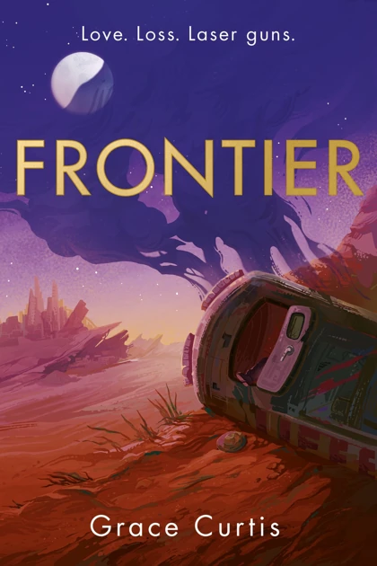
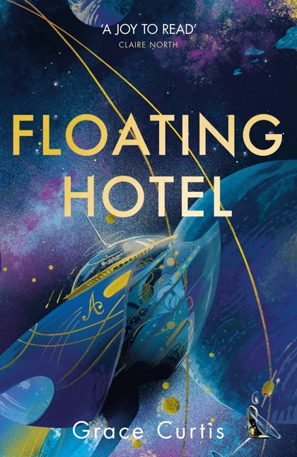
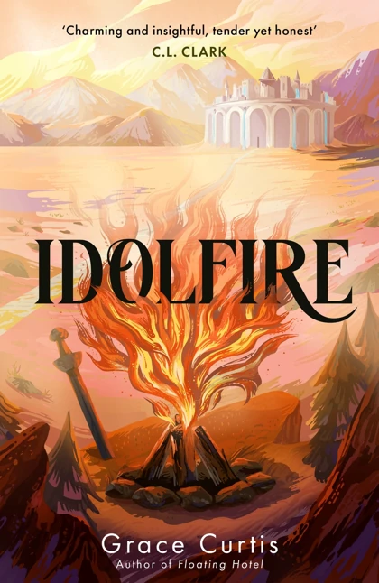
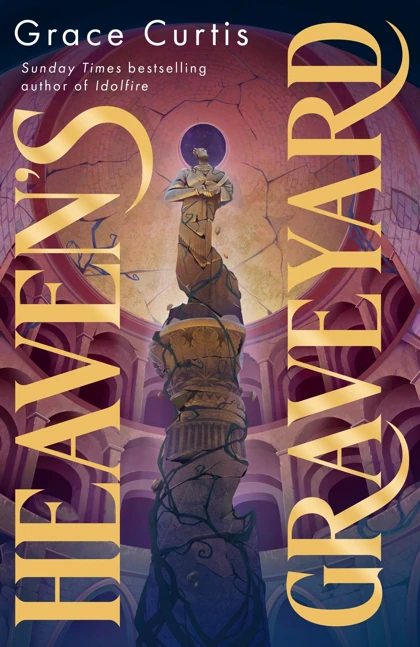

Grace Curtis writes across overlapping speculative genres. A reader may be drawn to her work before knowing whether to begin with a western, a cosy mystery, a pilgrimage or an archaeological fantasy.
Objective · Help new readers choose a first book and reach its UK publisher page with confidence.
Audience · New and genre-adjacent readers encountering Curtis through bookselling, editorial or social discovery.
Role and scope · Independent research, positioning, copy, creative direction and a static web prototype. The profile and reading guide are built for review. Interviews, audience validation, analytics and campaign distribution are planned.
Mapping the reader experience.
Worlds worth getting lost in
Find your first book
Frontier · queer space western
Floating Hotel · cosy space mystery
Idolfire · sapphic slow burn
Heaven’s Graveyard · archaeological fantasy
Meet Grace
A favourite Northumbrian walk
What she could talk about for hours
A short interview in her own words, subject to participation and approval
Explore how she writes
What games taught her about worldbuilding
How she builds a cast of misfits
Real places and histories behind her worlds
Bring readers to the profile
Book-mood carousel
Approved interview quote over cleared moorland imagery
Search-friendly guide to Grace Curtis’s books
Pitch to a bookseller or genre newsletter
The guide helps new readers choose a book. Author and craft features give them reasons to stay, while editorial search content and proposed outreach give them ways to find the profile. The interview, carousel and outreach remain proposals.
Original marketing mind map showing four branches of the reader experience · View full size
02Understanding the author
Intimate stories in expansive worlds.
My proposed positioning connects speculative places with human relationships. The books offer different kinds of travel and discovery, with romance, found family or memory giving readers a reason to care about where the journey leads.
Literary identity and genre · The publisher describes Curtis as a writer from Newcastle upon Tyne. Her work spans queer science fiction and sapphic fantasy.
Influences · Curtis connects Idolfire with post-Roman Britain and open-world games in her publisher Q&A.
Recurring themes · A preliminary editorial reading identifies exploration, relationships and the histories places carry.
Journalism and interests · Games writing, hiking and climbing provide subjects for further editorial exploration.
Tone · The proposed editorial voice is observant, warm and specific, with room for mystery.
Hodderscape · Grace Curtis Q&A · 26 November 2026 · Hiking and climbing, gaming journalism bio, and Curtis’s account of post-Roman Britain, Breath of the Wild and Dark Souls as Idolfire influences.
These working audience hypotheses may overlap. Reader interviews and first-click tasks can help test them.
Primary audience hypothesis
LGBTQ+ and queer SFF readers
Idolfire and Frontier
What draws them in · Sapphic slow burn, queer adventure and worlds where queer characters belong.
How it shapes the profile · Give the guide distinct hooks for sapphic fantasy and a queer space western.
Research · Identify specific discussions in r/QueerSFF and relevant Gay’s The Word recommendations.
Core audience hypothesis
Cosy sci-fi and found-family readers
Floating Hotel
What draws them in · A place to spend time in, an ensemble cast and a mystery to unravel.
How it shapes the profile · Introduce the hotel in space first, then bring in the crew and their relationships.
Research · Locate relevant Goodreads group reads and check which themes readers discuss on The StoryGraph.
Core audience hypothesis
Fantasy mystery readers
Heaven’s Graveyard and Idolfire
What draws them in · Buried cities, contested histories and worlds with secrets to uncover.
How it shapes the profile · Explore a spoiler-light connection through Nivela after verifying the link and wording.
Research · Review relevant r/Fantasy and Goodreads discussions and verify the connection with primary sources.
Crossover audience to test
Narrative gamers who read SFF
Idolfire
What draws them in · Exploration, environmental storytelling and piecing together the history of a place.
How it shapes the profile · Use verified interviews to explore game influences and carry the idea into contours and brass waypoints.
Research · The Hodderscape Q&A supports the influence on Idolfire. Test whether it helps this group choose a book.
Original reader persona research board showing the four proposed audience segments · View full sizePreliminary search intent framework
Author discovery · Grace Curtis, Grace Curtis books, Grace Curtis author. Lead to the profile and bibliography.
Title-led · Frontier, Floating Hotel, Idolfire and Heaven’s Graveyard, qualified with the author’s name where needed. Lead to title sections and verified publisher links.
Choice-led · Which Grace Curtis book to read first. Lead to the mood guide.
Genre-led · Queer science fiction books, sapphic fantasy books, cosy science fiction and character-driven science fiction. Test fit before building discovery content.
Priority and search volumes await verification. For a future Semrush import, retain query, market, date, intent, volume, difficulty, source and proposed destination.
04Creating the experience
Start with the kind of story the reader wants. Each mood points to a title with a brief reason, while the full bibliography stays available for comparison. A direct publisher link is the next step when a reader is ready.
Moonlit Moorland: building a world around the author.
Midnight and twilight bring a sense of dusk. Moonlight and lavender soften the page, and brass waypoints suggest a route to follow. Fine contours and dotted paths take their cues from hiking maps. Northumbrian moorland and stone walls are creative references for the design. The profile links to Curtis’s own account of her literary influences.
Proposed title · Grace Curtis | Sci-Fi and Fantasy Author Profile
Proposed description · Explore Grace Curtis’s science fiction and fantasy novels and choose where to start with a mood-based reading guide.
Use descriptive section headings, book-title anchors, cleared cover descriptions and verified publisher links. Connect author intent to the introduction, comparison intent to the guide and title intent to the individual books. The portfolio case study has a canonical URL and a moorland sharing image. The unofficial preview is noindex. The portfolio case study can be indexed if approved and published.
Social carousel storyboard
Six designed concept slides for a potential author-discovery campaign.
Slide 01 / 06
Which Grace Curtis book should you read first?
Choose by the kind of world you want to spend time in.
Slide 02 / 06
Frontier
Follow a stranger across an Earth that feels like the edge of the map.

Slide 03 / 06
Floating Hotel
Check in for a mystery. Stay for the people who keep the place running.

Slide 04 / 06
Idolfire
Take the long road to a city where old gods still have a claim.

Slide 05 / 06
Heaven’s Graveyard
Dig for a legend and find a past that refuses to stay buried.

Slide 06 / 06
Find your first book.
Explore all four reading routes in the author profile.
Measurement and usability plan
Profile visits and referrals · Compare entrances and tagged referrals by source.
Guide interaction · Record mood selections, individual book selections and outbound publisher link clicks. Treat those clicks as intent signals.
Mobile usability · Ask readers to pick a book, explain how two options differ and find publisher information using the guide. Record completion, first click, hesitation and qualitative notes.
Carousel engagement · Compare saves, shares and profile referrals if the campaign is published.
Organic visibility · Track impressions and relevant queries only if indexing is approved.
Record version, date, source, device, task or event, denominator and result for future findings. Use observation first, then test copy or ordering changes.